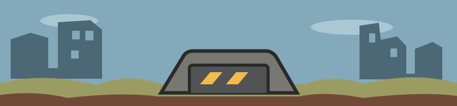

Skip to the bunker
HAVEN 17
CIVIL DEFENCE AUTHORITY · BUNKER TYCOON
Pause
CIVIL DEFENCE STATUS · STABLE
Overview

A home beneath the surface
Swipe to explore · Tap a room
Centre shaft
Welcome to Haven 17. Tap a room to explore.
World War 3 · Civilian shelter · Prototype
Home
Build
People
Entrance
Operations
Supplies
Settings